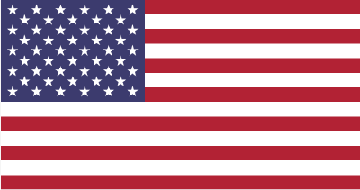
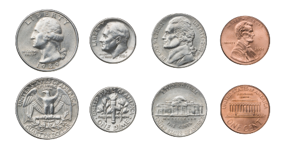

Seattle
JANUARY
Avg.
Avg.
4.8˚C
JULY
Avg.
Avg.
18.9˚C
位在美國西北部華盛頓州，是航太與網路產業重鎮
屬於溫帶海洋性氣候，受西風影響全年多雨，又稱「雨城」
New York
JANUARY
Avg.
Avg.
0.3˚C
JULY
Avg.
Avg.
27.4˚C
座落在美國東北部，是全球第一大城，人口將近 8,000 萬
屬於溫帶大陸型氣候，冬天會下雪
Los Angeles
JANUARY
Avg.
Avg.
14.2˚C
JULY
Avg.
Avg.
23.5˚C
位在美國西南方加州，著名景點有好萊塢、迪士尼樂園等
屬於溫帶地中海型氣候，終年乾燥少雨
Boston
JANUARY
Avg.
Avg.
-1.7˚C
JULY
Avg.
Avg.
23.0˚C
位在美國東北部麻州，歷史悠久，匯聚哈佛和 MIT 等知名學校
屬於大陸性氣候，夏季相對炎熱潮濕，冬天會下大雪
Chicago
JANUARY
Avg.
Avg.
-4.0˚C
JULY
Avg.
Avg.
24.3˚C
美國中部第一大城，鄰近五大湖，是美國重要的轉運城市
屬於溫帶大陸性氣候，四季分明
San Francisco
JANUARY
Avg.
Avg.
10.9˚C
JULY
Avg.
Avg.
17.1˚C
位在加州北部灣區，鄰近矽谷，谷歌、蘋果皆於此設立總部
屬於涼夏型地中海氣候，降雨少但常起霧
Seattle
San Francisco
Los Angeles
Chicago
Boston
New York
Country Profile
- 人口：約 322,369,319 人（2016）
- 首都：Washington D.C. 華盛頓特區
- 最大都市：New York 紐約
- 語言：以英文為主
- 電壓：120V
- 插座：跟台灣一樣
- 駕駛：靠右行駛
- 國際電話區號：+1
- 人均 GDP：57,220 美元（2016）
Currency
- 貨幣符號：USD / $。分成 分（Cents）跟 元（Dollar）。100 Cents = 1 Dollar
-
紙鈔跟銅板：
- 紙鈔 - 1元、10元、20元、50元、100元
- 銅板 - 1分（Cent）、5分（Dime）、10分（Nickel）、25分（Quarter）、1元（Dollar）
- 匯率：1:31（as of August 2016） 即時匯率查詢

Transportation
市區交通
-
開車 - 美國最主要的交通工具還是汽車。大部分人還是以汽車通勤上班，因此美國的公路很發達。在台灣考駕照可先換國際駕照後至美國使用。
-
捷運 - 以兩地區為例：New York City Subway（幾乎涵蓋所有地區）、Bay Area Rapid Transit, BART（通往舊金山灣區附近各處，班距約 10 ~ 15 分鐘）
-
公車 - 大部分城市都有自己的公車系統。 可參考以下網站
-
單車 - 許多城市皆有自己的租借系統，建議前往該城市前可以先查詢該城市 bike sharing systems。
-
 Car Share 汽車共享 - 城市內短程的汽車租借，適合租借一到兩個小時。但需要在 A 點借 A 點還車，可參考 Zipcar。
Car Share 汽車共享 - 城市內短程的汽車租借，適合租借一到兩個小時。但需要在 A 點借 A 點還車，可參考 Zipcar。
城市間交通
-
飛機 - 國內線頗為方便。若兩地車程超過三個小時，且兩地皆有航班，則可以選擇國內線航班。
-
開車 - 美國城際、州際的公路皆十分發達，可以透過開車前往各地。由於公路路網較複雜，因此也建議開車上路前務必先查詢好路線。
-
Car Rental 租車 - 可以 A 點借、B 點還，適合在長程旅途使用。有多家公司可以參考。
Entertainment
美式足球是美國特有的運動，也是美國收視率最高的比賽之一。不僅大學美式足球很受歡迎，每年二月的 NFL 美式足球聯盟決賽 -- Super Bowl 超級盃更是讓全世界矚目。
FOOTBALL
籃球是美國最多人參與的運動之一。美國的 NBA (National Basketball Association)，也是各國籃球選手公認的最高殿堂。美國大學籃球非常發達，每年三月進行決賽時被成為 March Madness「瘋狂三月」。
BASKETBALL
棒球被譽為是 National Pastime 美國的國球，在 Major League Baseball 美國的大聯盟也被認為是全球棒球的最高殿堂。另外，美國各地的學校和社區棒球隊也相當發達。
BASEBALL
可查詢關鍵字
- 國家相關：Lonely Planet USA
- 交通：Transportation of 「填入城市」/ carshare
- 娛樂、休閒：MLB / NBA / NFL / Hiking trails in USA / Camping spots in USA / National Parks in USA